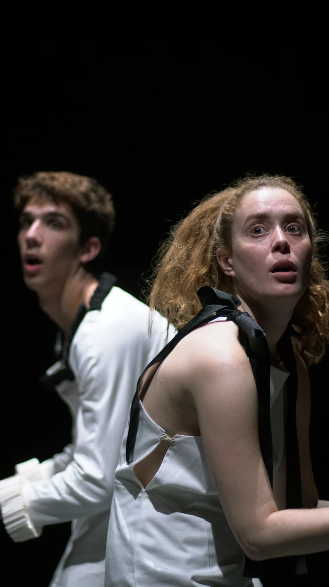
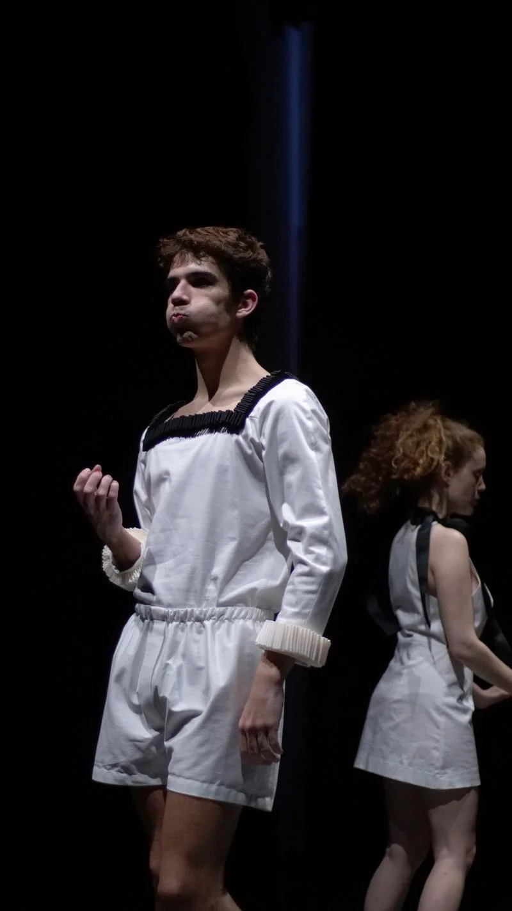
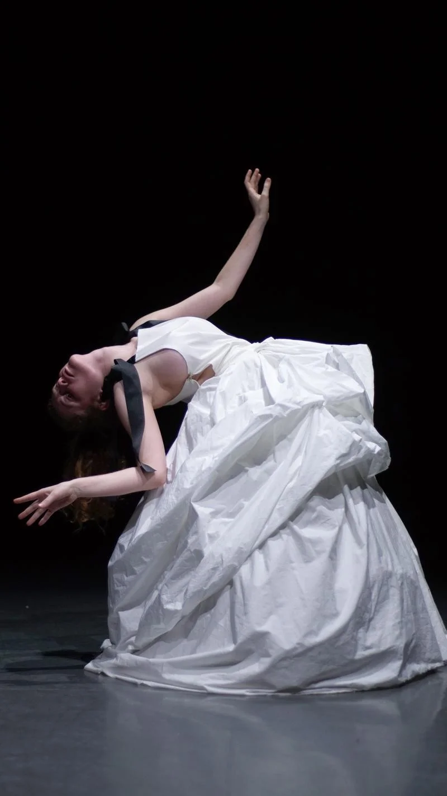
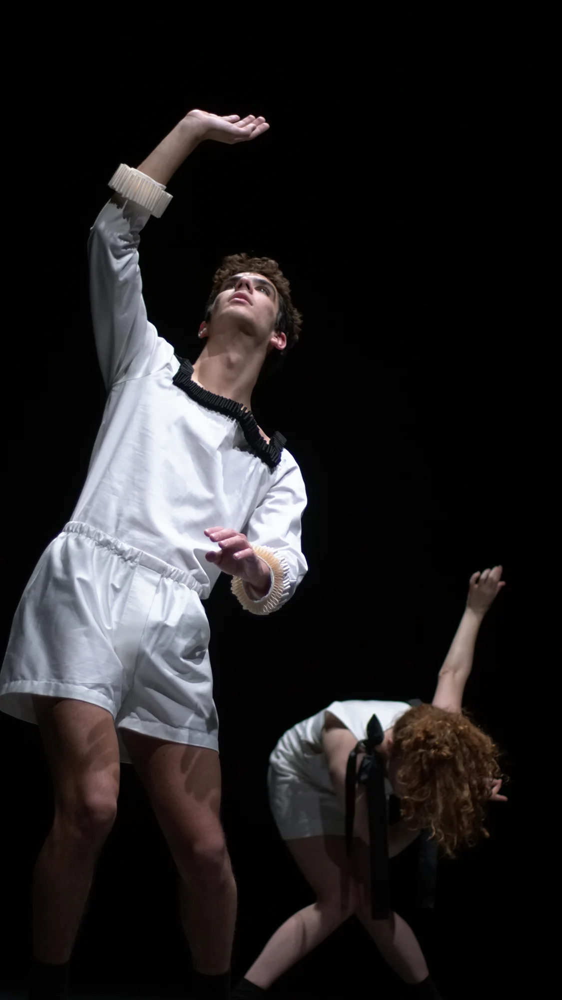

THE UNCANNY VALLEY (2019)
pieza escénica / laSADCUM
Ulay y Eva son dos personajes ficticios que se encuentran dentro de un videojuego de realidad virtual. Enmarcados en un paisaje barroco-futurista, Ulay y Eva se convierten un reflejo distópico de la virtualización del cuerpo humano, mostrando la desnaturalización del hombre y la mecanización de sus acciones.
- Premiada en el 33o Certamen Coreográfico de Madrid con una residencia en La Caldera
- Coreografía y dirección
- Guillem Jiménez
- Interpretación
- Guillem Jiménez y Ona Cros
- Diseño y confección de vestuario
- Guillem Rodriguez
- Tutorización
- Juan Carlos Lérida
Fotos Andrea Campillo



